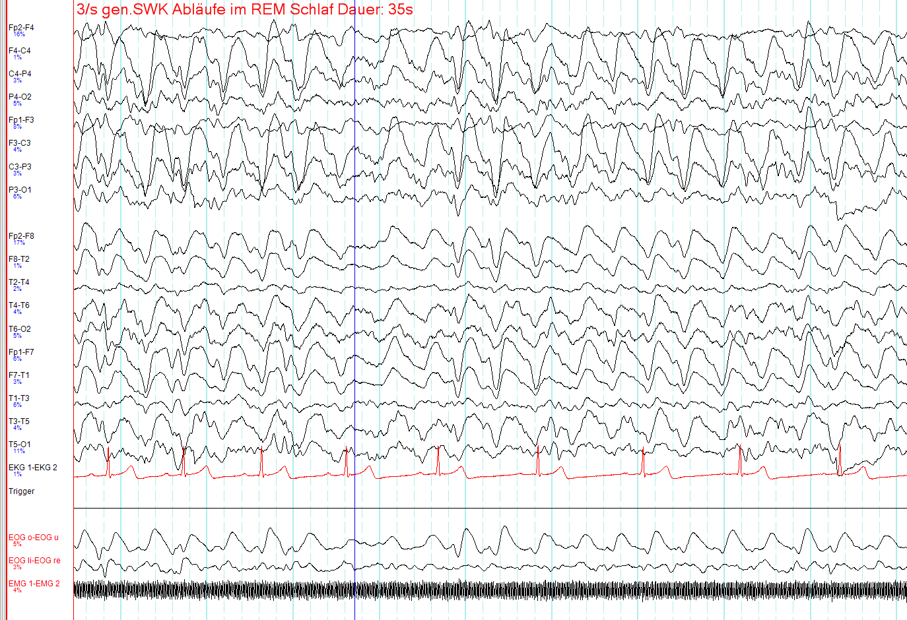

Pergunta central · Pág. 11 de 20
Anamnese, ponta-onda e quando a RM é inegociável
Quando o vídeo-EEG mata o diagnóstico — e quando a RM é inegociável?
O diagnóstico da epilepsia começa na história e numa testemunha, confirma-se no traçado e, conforme a idade e o exame neurológico, completa-se na imagem. Há um achado do EEG que confirma e um achado que exclui — e ambos mudam a conduta.
Anamnese e testemunha
A base é a anamnese — o que foi dito, se machucou, se havia testemunha e, sobretudo, como começou (focal vs generalizada). O relato do começo é o que classifica; o que se vê no fim é o que engana.
EEG / vídeo-EEG e ponta-onda
O EEG / vídeo-EEG tem arritmia clássica: o complexo ponta-onda. Várias epilepsias têm EEG característico (detalhado nas síndromes). O vídeo-EEG é a monitorização (ex.: 24 h) com câmera; se, durante o evento, há ponta-onda → confirma crise epiléptica.
Pseudocrise · movimento sem arritmia
A pseudocrise / conversiva / psiquiátrica é movimento sem arritmia epiléptica no EEG — um diagnóstico diferencial importante e, muitas vezes, mais difícil de manejar que a própria epilepsia. O vídeo-EEG do evento é o que separa: a tela mostra o movimento, o traçado mostra se há — ou não — descarga epiléptica.
RM por idade e exame neurológico
A imagem (RM) entra quando: criança com suspeita de lesão / exame neurológico alterado; adulto e idoso — buscar foco estrutural. Na criança com desenvolvimento normal e crise sem prejuízo, a imagem nem sempre é necessária; no adulto em diante, ela é inegociável.

Resumo operacional
História (início!) + EEG; RM em adulto/idoso e criança com lesão/EN alterado.
Por que importa
Tratar pseudocrise com AED é iatrogenia; deixar a RM de lado no adulto é perder a causa estrutural que mudaria tudo.
Quiz
Conexão
Fechado o diagnóstico de trabalho, a pergunta deixa de ser “o quê” e passa a ser “quando” medicar.